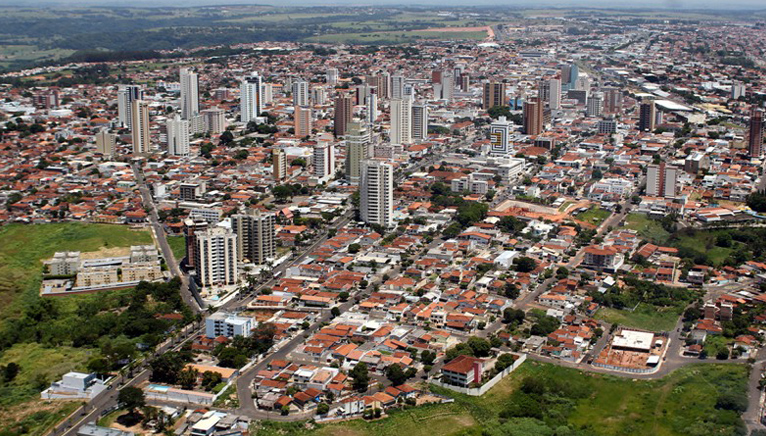
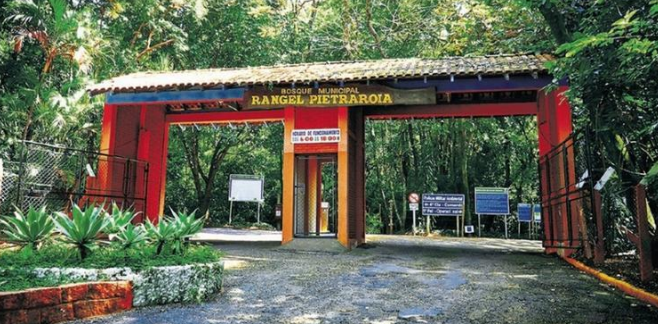
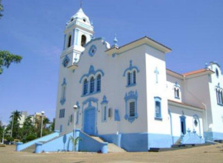
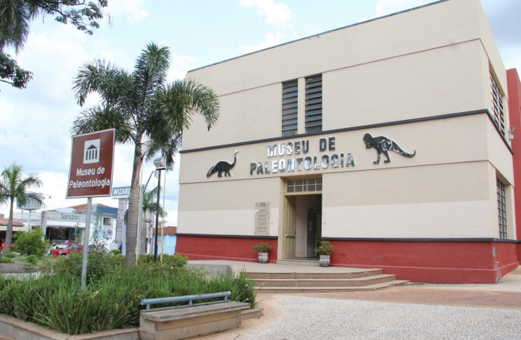
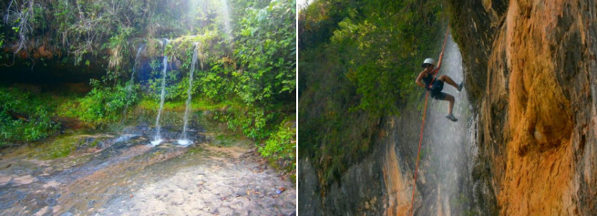
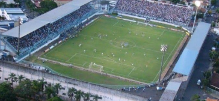
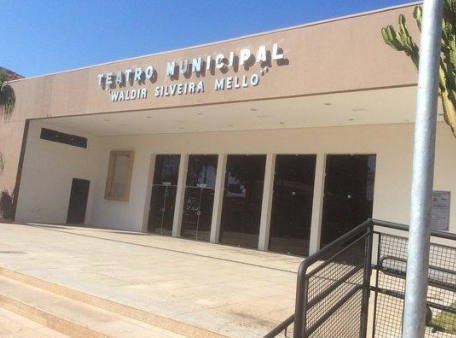

Conheça alguns dos principais pontos turísticos da cidade.

Espaço verde muito utilizado para lazer, caminhadas e contato com a natureza.

Um dos principais patrimônios históricos e religiosos da cidade.

Museu com fósseis e informações históricas sobre a região.

Local turístico conhecido por trilhas, natureza e prática de rapel.

Tradicional estádio esportivo da cidade de Marília.

Espaço cultural utilizado para peças teatrais e apresentações.